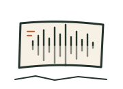
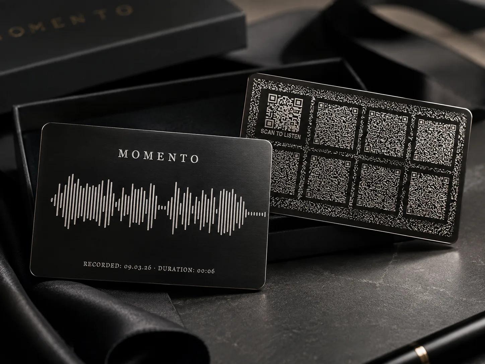

Momento
A few seconds of sound, laser-engraved into a metal card. The audio isn’t stored on a server somewhere with a bill attached. It’s etched into the card itself, and scanning it rebuilds the recording from what’s physically there.
Still in active development and made one at a time. Tell me what you’d like recorded and I’ll get back to you.


Why a card and not a link
Most keepsakes that play sound are really a link. The recording lives on a server, and the day someone stops paying for that server the card goes quiet. Momento skips the server. The audio is compressed and written into the codes on the back, so the card is the copy. As long as the page that reads it is loaded, it works with no signal at all, and it will still work when every service it could have depended on is gone.
How it works
- You record a few seconds of sound: a voice, a laugh, a first word, a line from a song you sang together.
- I compress the audio and encode it into a grid of codes, then laser-engrave the grid on the back and the waveform, date, and duration on the front.
- Anyone scans the card. The reader page stitches the codes back into the original audio and plays it, offline, from the card alone.
Order one
Cards are made by hand while the project is in development, so there’s no cart yet. Email me with what you’d like recorded and I’ll tell you what’s possible.
Recording length is limited by how much can be engraved legibly on a card. Short and meaningful beats long.